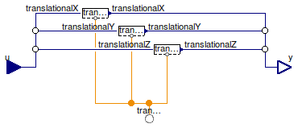

Table of Contents
- User's Guide
- Blocks
- Conditions
- Assemblies
- Regions
- Subregions
- Connectors
- Characteristics
- Units
- Quantities
- BaseClasses
Download
- Latest: FCSys-2.0.zip (**Please check back soon or contact kdavies4 at gmail.com.)

| Name | Description |
|---|---|
| Translational | Condition for a Translational connector, with efforts by default |
| TranslationalIsolated | Condition for a Translational connector, with zero flows by default |
| Conditions for a component of translational momentum |

| Type | Name | Default | Description |
|---|---|---|---|
| Conditions | |||
| Velocity | translationalX | redeclare Component.Velocity… | X-axis translational |
| Velocity | translationalY | redeclare Component.Velocity… | Y-axis translational |
| Velocity | translationalZ | redeclare Component.Velocity… | Z-axis translational |
| Assumptions | |||
| Axes with translational momentum included | |||
| Boolean | inclTransX | true | X |
| Boolean | inclTransY | true | Y |
| Boolean | inclTransZ | true | Z |
| Type | Name | Description |
|---|---|---|
| Translational | translational | Connector for advection or diffusion of translational momentum |
| RealInputBus | u | Input bus for values of specified conditions |
| RealOutputBus | y | Output bus of measurements |
model Translational "Condition for a Translational connector, with efforts by default" import FCSys.BaseClasses.Utilities.countTrue; import FCSys.BaseClasses.Utilities.enumerate; import FCSys.BaseClasses.Utilities.index; extends FCSys.BaseClasses.Icons.Conditions.Single; // Included components of translational momentum parameter Boolean inclTransX=true "X"; parameter Boolean inclTransY=true "Y"; parameter Boolean inclTransZ=true "Z"; // Conditions replaceable Component.Velocity translationalX(final axis) if inclTransX constrainedby Conditions.ByConnector.Translational.Component.BaseClasses.PartialCondition( axis=Axis.x) "X-axis translational"; replaceable Component.Velocity translationalY(final axis) if inclTransY constrainedby Conditions.ByConnector.Translational.Component.BaseClasses.PartialCondition( axis=Axis.y) "Y-axis translational"; replaceable Component.Velocity translationalZ(final axis) if inclTransZ constrainedby Conditions.ByConnector.Translational.Component.BaseClasses.PartialCondition( axis=Axis.z) "Z-axis translational"; Connectors.Translational translational(final n_trans=n_trans) "Connector for advection or diffusion of translational momentum"; Connectors.RealInputBus u "Input bus for values of specified conditions"; Connectors.RealOutputBus y "Output bus of measurements"; protected final inner parameter Integer n_trans=countTrue({inclTransX,inclTransY, inclTransZ}) "Number of components of translational momentum"; final inner parameter Integer cartTrans[n_trans]=index({inclTransX,inclTransY, inclTransZ}) "Cartesian-axis indices of the components of translational momentum"; final inner parameter Integer transCart[Axis]=enumerate({inclTransX, inclTransY,inclTransZ}) "Translational-momentum-component indices of the Cartesian axes"; equation // X-axis translational connect(translationalX.translational, translational); connect(u.translationalX, translationalX.u); connect(translationalX.y, y.translationalX); // Y-axis translational connect(translationalY.translational, translational); connect(u.translationalY, translationalY.u); connect(translationalY.y, y.translationalY); // Z-axis translational connect(translationalZ.translational, translational); connect(u.translationalZ, translationalZ.u); connect(translationalZ.y, y.translationalZ); end Translational;
| Type | Name | Default | Description |
|---|---|---|---|
| Assumptions | |||
| Axes with translational momentum included | |||
| Boolean | inclTransX | true | X |
| Boolean | inclTransY | true | Y |
| Boolean | inclTransZ | true | Z |
| Type | Name | Description |
|---|---|---|
| Translational | translational | Connector for advection or diffusion of translational momentum |
| RealInputBus | u | Input bus for values of specified conditions |
| RealOutputBus | y | Output bus of measurements |
model TranslationalIsolated "Condition for a Translational connector, with zero flows by default" extends Translational( redeclare replaceable Conditions.ByConnector.Translational.Component.Force translationalX(final axis), redeclare replaceable Conditions.ByConnector.Translational.Component.Force translationalY(final axis), redeclare replaceable Conditions.ByConnector.Translational.Component.Force translationalZ(final axis)); // See note in ChemicalReactionNoFlow. end TranslationalIsolated;